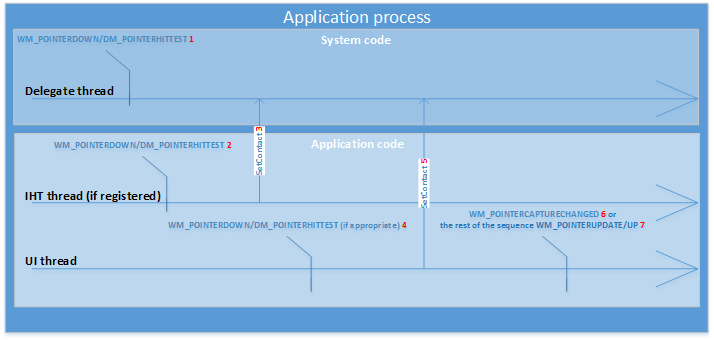

This section provides an overview of the Direct Manipulation threading model, how window messages are processed by Direct Manipulation, and how the state of a viewport changes as input is mapped to output motions.
Direct Manipulation uses two threads to coordinate asynchronous operations:
UI thread - the thread that owns the HWND associated with input. This thread owns initialization of Direct Manipulation. Mouse and keyboard input processing also happens on the UI thread.
Delegate thread - the thread created and owned by Direct Manipulation. Touch input processing happens on the delegate thread.
In a typical configuration where hit testing is done on the UI thread, window messages are processed by Direct Manipulation in the following order:

For a viewport at rest:
For a viewport in motion (with a status of RUNNING or INERTIA), the window message reaches the delegate thread first, where Direct Manipulation hit tests against all running viewports. Direct Manipulation automatically assigns the contact to the appropriate viewports identified by hit testing. The viewport status is RUNNING and the output transform will be updated.
In some cases, an application UI thread may be too slow to respond to hit testing. A hit test thread may be used (RegisterHitTestTarget) to allow the client to move WM/_POINTERDOWN and DM/_POINTERHITTEST messages to a specific thread to allow for hit testing.
Typically, Direct Manipulation sends only WM/_POINTERDOWN and DM/_POINTERHITTEST messages to the UI thread, withholding later messages while waiting for a response from the client. If the client calls SetContact, the only messages the UI thread receives when a manipulation is detected are WM/_POINTERDOWN and DM/_POINTERHITTEST, and WM/_POINTERCAPTURECHANGED message.
The client might not call SetContact when processing WM/_POINTERDOWN and DM/_POINTERHITTEST messages. In this case, Direct Manipulation sends all messages to the UI thread without analyzing the messages to see if there is a manipulation. The client can then choose any point to call SetContact and have Direct Manipulation start detecting manipulations, and send WM/_POINTERCAPTURECHANGED message messages when one is detected.
Windows 10 and later: You can decide which manipulations you want to handle by calling DeferContact before calling SetContact on a WM/_POINTERDOWN or DM/_POINTERHITTEST message. DeferContact ensures all subsequent messages are sent to the UI thread for the specified period of time.